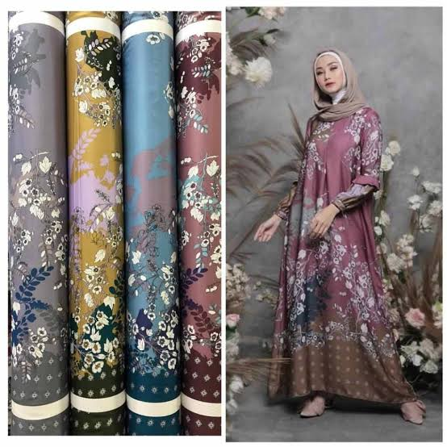
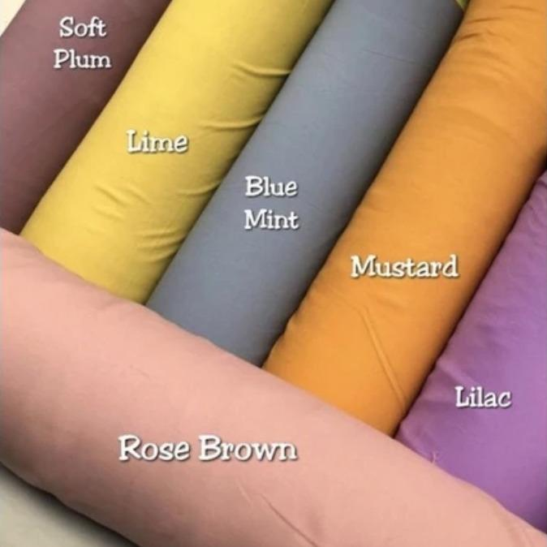
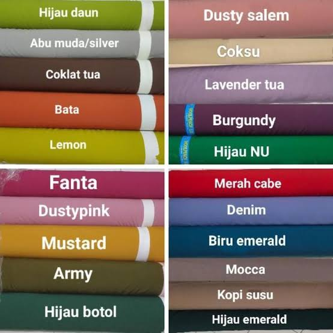
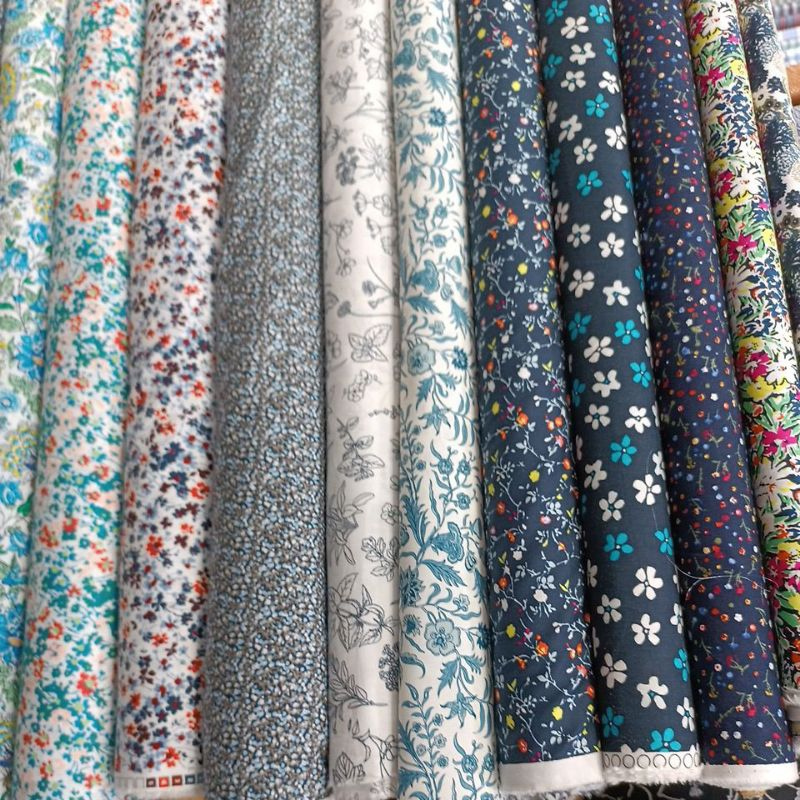
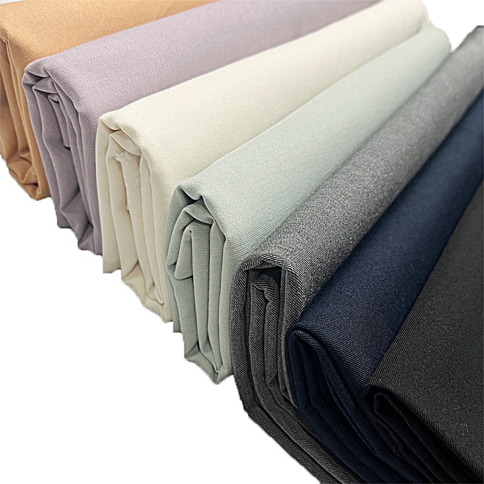
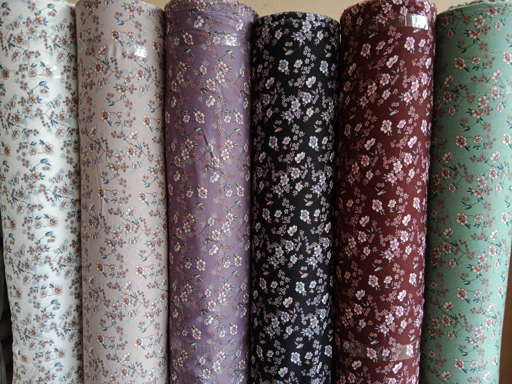
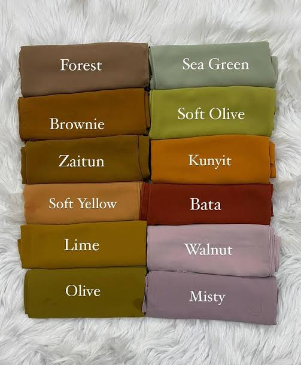

Maxmara motif Batik
Halus dengan kilau yang lembut dan mewah, sangat jatuh dan tidak kaku
Rp 28.000 /m
Pesan WA
Shakila Twill
Adem dan lembut tidak mudah kusut, daya serap keringat yg cukup baik
Rp 22.000 /m
Pesan WA
Satin Velvet
Halus dan licin disisi luar, kilau yang lembut berkesan mewah yang elegan
Rp 25.000 /m
Pesan WA
Woolpeach dyeing
Lembut dengan serat yang rapat dan ringan dengan efek jatuhan kain yang anggun
Rp 26.000 /m
Pesan WA
Woolpeach Printing
Halus, lembut cukup tebal namun ringan, tidak mudah kusut dan motif terlihat tajam
Rp 30.000 /m
Pesan WA
Semiwool
Lembut, tebal tapi terasa lebih ringan, tidak mudah kusut cocok untuk mobilitas tinggi, memberi kesan rapi, profesional dan mewah
Rp 48.000 /m
Pesan WA

Ceruty Babydoll
Tekstur seperti kulit jeruk yang halus, ringan dan efek jatuh yang indah, tipis dan cenderung transfarn sehingga membutuhkan tambahan kain furing didalam nya
Rp 20.000 /m
Pesan WA